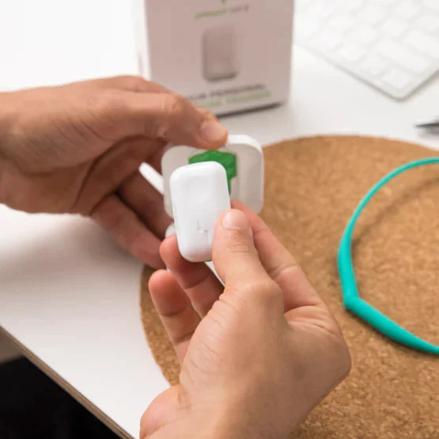

01
Осанка
Устройство
Сканер осанки (редко) или приложение + камера; носимый корректор осанки.
На фото: носимый датчик-корректор осанки (вибрация при сутулости) — Upright GO 2. Фото: сайт Upright.
Примеры устройств